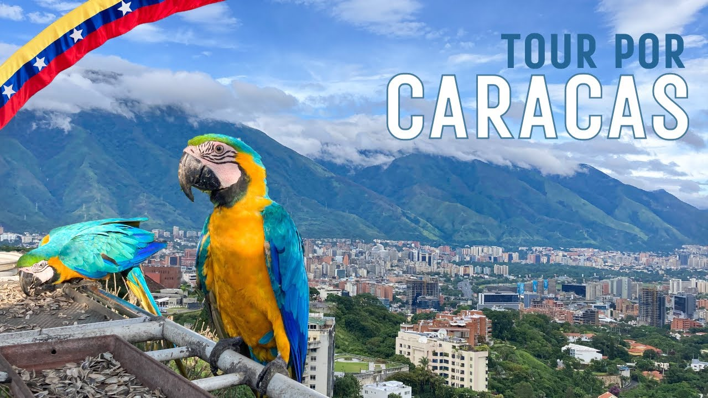

Viajemos Por Venezuela!
El turismo en Venezuela se desarrolló considerablemente en las últimas décadas, por su favorable
posición geográfica, la variedad de paisajes, la riqueza de la flora y fauna, las manifestaciones
artísticas y el privilegiado clima tropical del país, que permite disfrutar de cada región
(especialmente las playas) durante todo el año.
Salto Ángel, La cascada de agua más alta del mundo
El Salto Ángel, con sus más de 900 metros de altura, es un espectáculo inigualable que te dejará sin
palabras desde el primer momento en que lo contemplas.
Explora la selva tropical venezolana para llegar a este icono natural, un viaje que te llevará a
través de exuberantes paisajes y una biodiversidad única. Alcanzarás el mirador para deleitarte con la
vista de esta imponente cascada, una experiencia que quedará grabada en tu memoria para siempre.
¡No te pierdas la oportunidad de presenciar el Salto Ángel y experimentar la grandiosidad de este tesoro
natural que te dejará maravillado!
Archipiélago Los Roques
Imagina playas de arena blanca como el azúcar, aguas cristalinas que cambian de tonalidad con el sol
y un
archipiélago de islas que te dejarán sin aliento. Los Roques es un destino de ensueño para aquellos que
buscan experiencias auténticas en contacto con la naturaleza.
Las islas de Los Roques ofrecen un escape tranquilo y relajante para quienes buscan desconectar del
bullicio urbano y conectarse con la calma y la serenidad de la naturaleza. Con su ambiente acogedor y su
gente amable, este paraíso te recibirá con los brazos abiertos para ofrecerte una experiencia
inolvidable.
¡Ven y descubre la magia de Los Roques en Venezuela! Un destino incomparable que te cautivará con su
belleza natural, su encanto caribeño y su atmósfera relajada.
Médanos de Coro: Desierto en Venezuela!
Sumérgete en un paisaje de ensueño que te dejará sin aliento. Los Médanos de Coro, con sus dunas
ondulantes y su arena dorada, son un espectáculo natural único en el mundo. Este impresionante parque
nacional ofrece a los visitantes la oportunidad de adentrarse en un entorno desértico fascinante, donde
la naturaleza ha esculpido escenarios impresionantes a lo largo de los años.
Déjate maravillar por la majestuosidad de estas dunas cambiantes y disfruta de actividades como el
sandboard, una emocionante experiencia que combina adrenalina y diversión sobre la arena.
Además, podrás
apreciar la fauna y flora adaptadas a estas condiciones extremas, convirtiendo tu visita en una
experiencia aún más enriquecedora.

¡Descubre la vibrante Caracas y déjate sorprender por la majestuosidad de las guacamayas!
En la capital venezolana, Caracas, además de sus monumentos icónicos y su rica herencia cultural, la
ciudad alberga una
variedad de espacios naturales donde podrás maravillarte con la belleza de las guacamayas, esas aves
coloridas que llenan el cielo con su encanto.
Las guacamayas son seres fascinantes que habitan en entornos naturales como el Parque Nacional El
Ávila
y el Parque del Este, entre otros pulmones verdes de la ciudad.
Imagina contemplar sus plumajes
vibrantes mientras vuelan en libertad, añadiendo un toque de color único al paisaje caraqueño.